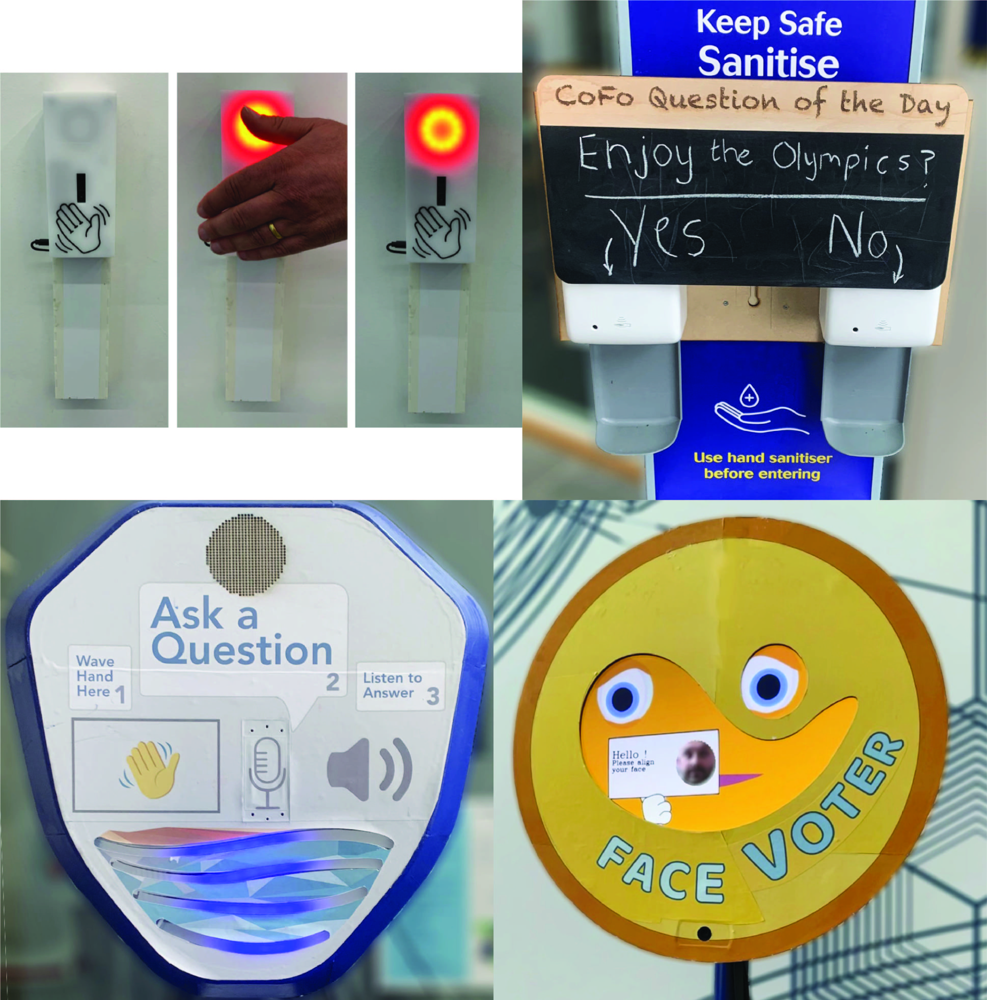

Future Public-Place Interactive Technologies
Going Far Beyond
Standard Buttons and Touch-Screens
Learn More
Many people use their personal mobile phones to access information and services when in public places,
but there is still a huge market for public walk-up-and-use technologies such as ticket vending machines,
information displays, museum exhibits and so on.
We would like to invite you to join a select group of thought-leaders, policy makers, city planners and
technologists to re-think the sorts of interactive technologies people will use in public places in the future,
going far beyond the standard button and touch-screen approaches.

We will tell you about some of our work in this space, funded by UK Research and Innovation, that was motivated as
a response to COVID-19 when most public technology (like touch-screens or vending machines) was switched off or adapted
due to fears of contagion.
The event will take place at the Breakwater Lodge Hotel in Cape Town between 9:30 AM and 3:30 PM on January 23rd 2023. The event is free, and includes a networking lunch.
The outline programme for this engaging and interactive event is:
| 09:30 |
Coffee and Registration. |
| 10:00 |
Welcome and Sharing our Experiences. |
| 10:45 |
How the Pandemic Impacted Public Technology
Adapting Public Technology in a Public-Health Emergency. |
| 12:00 |
Lunch. |
| 13:00 |
Design Activity: Going Beyond Technology you Touch. |
| 14:15 |
Coffee. |
| 14:30 |
Using our Toolkit to Take Your Ideas Further. |
| 15:30 |
Close. |
By the end of the event you will be: equipped to think about how to respond to any future health emergencies;
gain insights into the pros and cons of non-touch public technology; be resourced to take thinking further; and,
have met an interesting diverse group of people.
We hope you can join us!